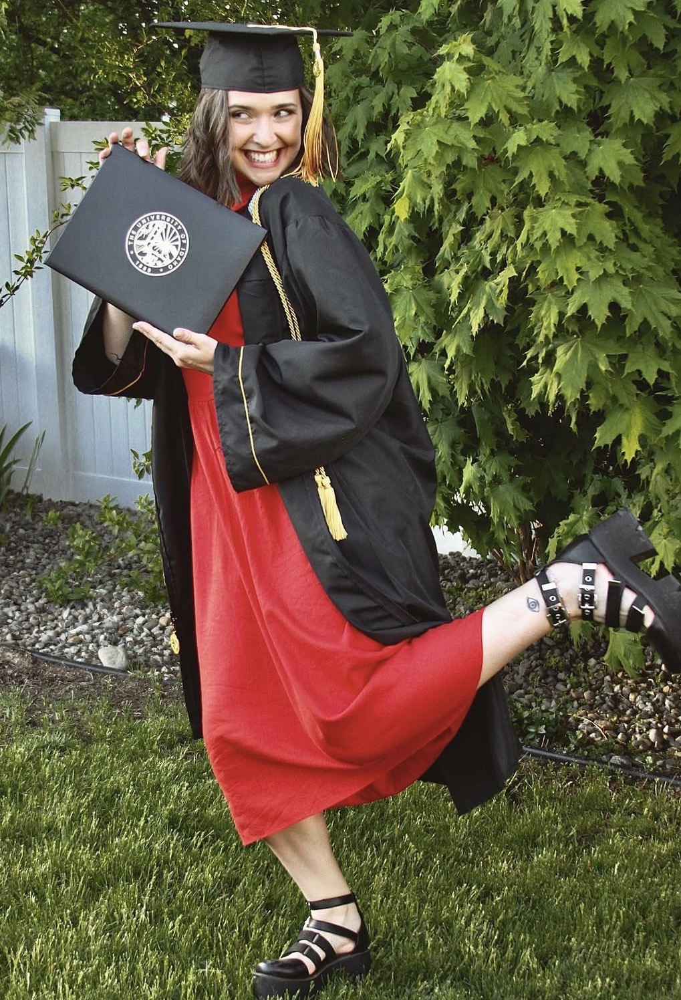
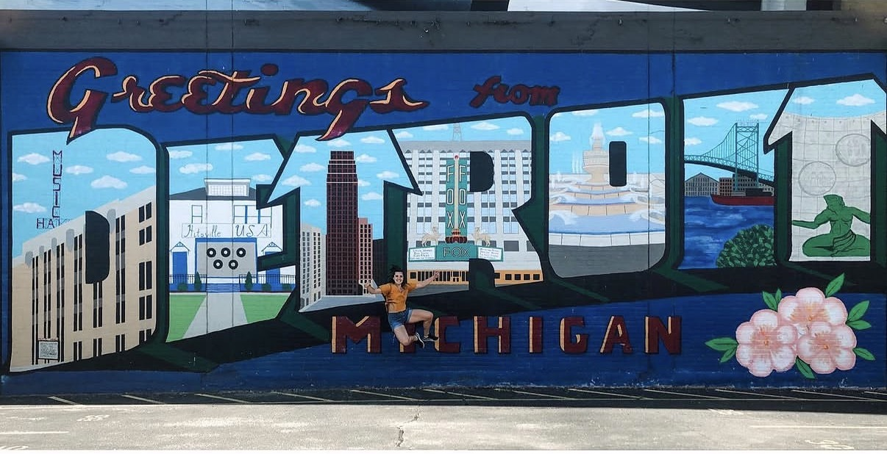
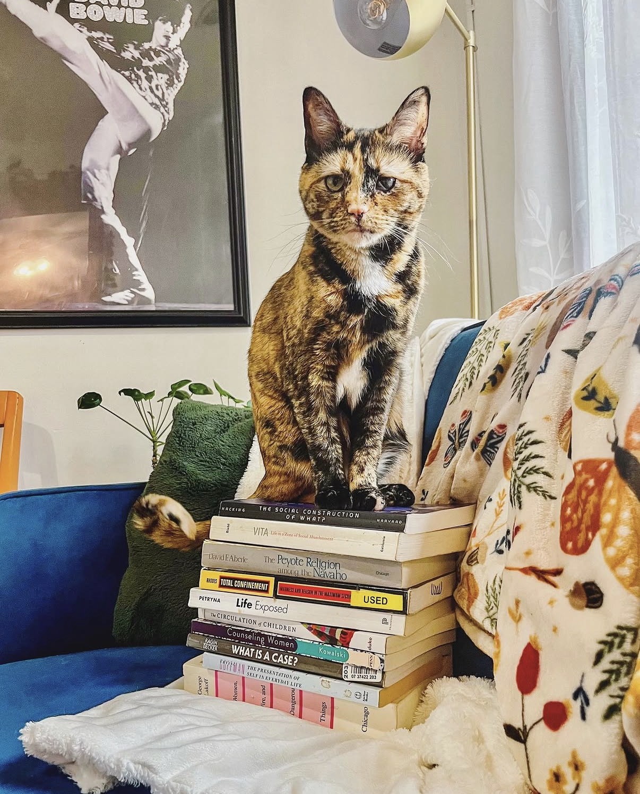
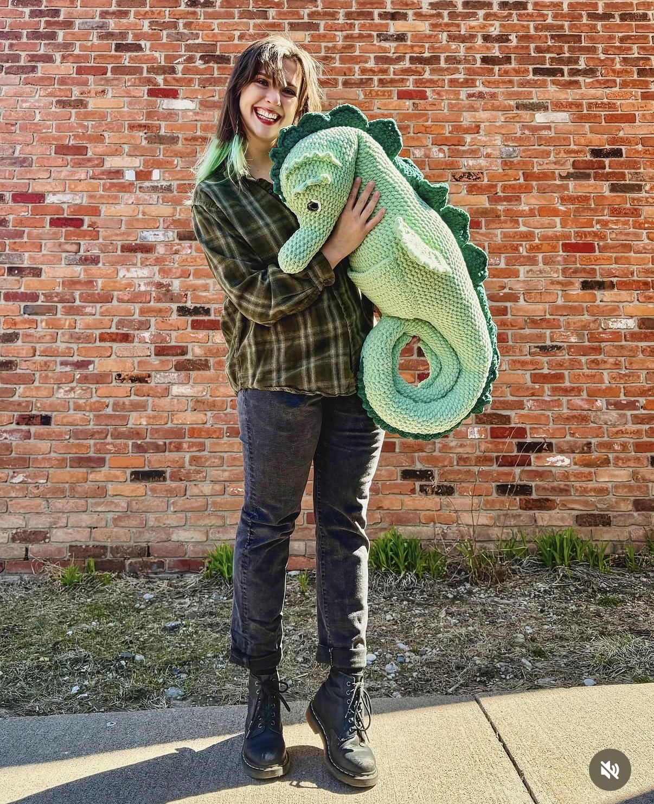
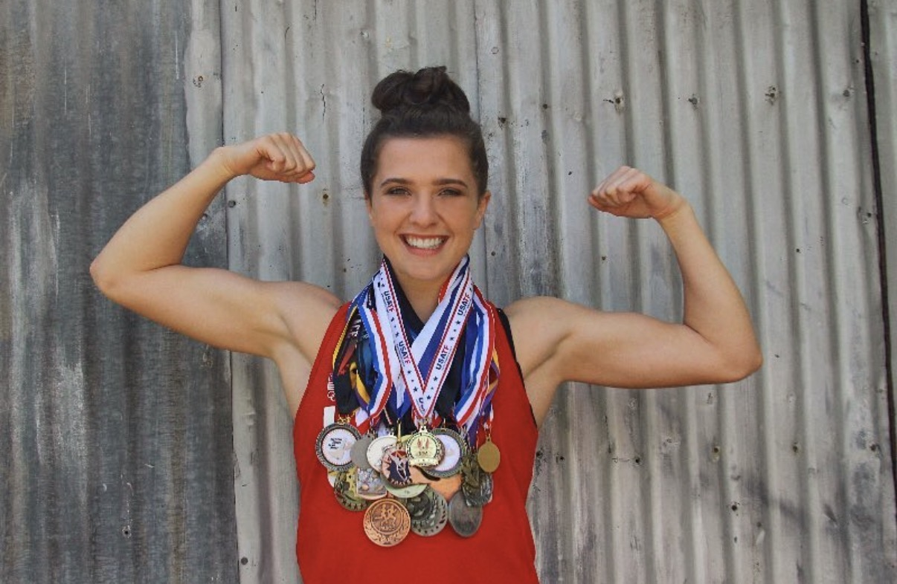

Ph.D. Candidate, Anthropology
ABD and available for hire
jocieosika@wayne.edu
I was going to try to describe my own personality, but then I decided asking my friends and family to describe me in 3-5 words would be both funnier and more honest. According to them, I'm "Ms. Frizzle meets Bill Nye." I'm pretty sure that the "Ms. Frizzle" label encompassed my approach to both science and relationships, including mentions like "thoughtful*," "kind," "innovative,"* "creative," "enthusiastic," "empathetic leader," and "people-focused." Then "Bill Nye" was the touchstone for more traditional associations with succesful scholarship like "hard working intellectual," "detail oriented professional," "dedicated," "organized," "insightful," and "driven."*
*I got thoughtful from three different people! I also got innovative, empathetic, and driven respectively from two different people!
I was born in Montana, but I grew up in Coeur d'Alene, Idaho! I completed K-12 in the Idaho public school system, the least-funded one in the United States, and I consider myself a major beneficiary of the dedication of excellent teachers who put the children in the community above their own opportunities to be paid a more livable wage. This early experience contributes to my passion for teaching, as I know how life-changing one good class can be.

Summa Cum Laude, 4.0 GPA
Bachelors of Science, Anthropology
Bachelors of Science, Psychology
I was a third-generation student at the University of Idaho, a land grant university in Moscow, Idaho. While I was there, I balanced my responsibilities as an NCAA Division I athlete with a rigorous program of study that allowed me to graduate in three years with two degrees.

Ph.D., Anthropology (expected May 2027)
Dissertation defense scheduled for March 2027
Following my bachelor's degrees, I was pleased to be accepted directly into Wayne State's anthropology Ph.D. program. Moving to a new city where I had no connections during the COVID-19 lockdown was difficult, but I am glad I did! Living in a city with such a rich cultural and historical background has informed my development as an anthropologist, which has been well stewarded by Wayne State's R1 program.
I am the kind of person who is always pursuing at least two hobbies with abandon. I feel that it helps me balance my life and stress levels, and I love mastering new skills! In fact, building this website has been one such quest for me. Here is a list of some of the key ones:


